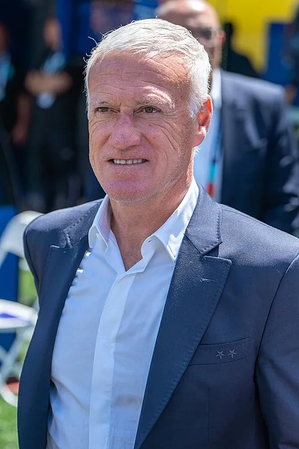

Photo source ↗Bryan Berlin · CC BY-SA 4.0
The profile
Didier Deschamps
Didier Deschamps is a French former midfielder and manager. He was known as an organiser and leader during his playing career.
As a player, Deschamps represented Nantes, Marseille, Juventus and Chelsea. He later managed Monaco, Juventus and Marseille before taking charge of France in 2012.
Deschamps captained France to the 1998 title and coached the country to another in 2018. The latter team beat Croatia 4–2 in the final.
1998France
Champion
Group C France3 : 0South Africa
- Christophe DUGARRY36′
- Pierre ISSA77′ · own goal
- Thierry HENRY90+2′
Francehome
Starting lineup
- Fabien BARTHEZ
- Bixente LIZARAZU
- Laurent BLANC
- Marcel DESAILLY
- Lilian THURAM
- Didier DESCHAMPS
- Zinedine ZIDANE
- Emmanuel PETIT
- Youri DJORKAEFF
- Stephane GUIVARCH
- Thierry HENRY
Substitutions
- 26′Christophe DUGARRY on · Stephane GUIVARCH off
- 73′Alain BOGHOSSIAN on · Emmanuel PETIT off
- 84′David TREZEGUET on · Youri DJORKAEFF off
South Africaaway
Starting lineup
- Hans VONK
- David NYATHI
- Willem JACKSON
- Mark FISH
- Phil MASINGA
- Lucas RADEBE
- Pierre ISSA
- Brendan AUGUSTINE
- Quinton FORTUNE
- John MOSHOEU
- Benni McCARTHY
Substitutions
- 56′Helman MKALELE on · Brendan AUGUSTINE off
- 89′Shaun BARTLETT on · Benni McCARTHY off
Group C France4 : 0Saudi Arabia
- Thierry HENRY37′
- David TREZEGUET68′
- Thierry HENRY78′
- Bixente LIZARAZU85′
Francehome
Starting lineup
- Fabien BARTHEZ
- Bixente LIZARAZU
- Laurent BLANC
- Marcel DESAILLY
- Lilian THURAM
- Didier DESCHAMPS
- Zinedine ZIDANE
- Alain BOGHOSSIAN
- Thierry HENRY
- Bernard DIOMEDE
- Christophe DUGARRY
Substitutions
- 30′David TREZEGUET on · Christophe DUGARRY off
- 58′Youri DJORKAEFF on · Bernard DIOMEDE off
- 79′Robert PIRES on · Thierry HENRY off
Saudi Arabiaaway
Starting lineup
- Mohammed AL DEAYEA
- Mohammed AL JAHANI
- Mohammed AL KHILAIWI
- Abdullah ZUBROMAWI
- Hussein AL SULAIMANI
- Khamis AL DOSSARI
- Fuad AMIN
- Ibrahim AL SHAHRANI
- Hamza SALEH
- Sami AL JABER
- Said AL OWAIRAN
Substitutions
- 33′Ibrahim AL HARBI on · Said AL OWAIRAN off
- 65′Khaled AL MUWALLID on · Ibrahim AL HARBI off
- 76′Ahmed AL DOSARI on · Mohammed AL JAHANI off
Round of 16 France1 : 0Paraguay
- Laurent BLANC114′
Francehome
Starting lineup
- Fabien BARTHEZ
- Bixente LIZARAZU
- Laurent BLANC
- Marcel DESAILLY
- Lilian THURAM
- Didier DESCHAMPS
- Emmanuel PETIT
- Youri DJORKAEFF
- Thierry HENRY
- Bernard DIOMEDE
- David TREZEGUET
Substitutions
- 65′Robert PIRES on · Thierry HENRY off
- 69′Alain BOGHOSSIAN on · Emmanuel PETIT off
- 76′Stephane GUIVARCH on · Bernard DIOMEDE off
Paraguayaway
Starting lineup
- Jose Luis CHILAVERT
- Francisco ARCE
- Carlos GAMARRA
- Celso AYALA
- Pedro SARABIA
- Roberto ACUNA
- Carlos PAREDES
- Julio Cesar ENCISO
- Jose CARDOZO
- Miguel BENITEZ
- Jorge CAMPOS
Substitutions
- 55′Julio Cesar YEGROS on · Jorge CAMPOS off
- 75′Denis CANIZA on · Carlos PAREDES off
- 90+1′Aristides ROJAS on · Jose CARDOZO off
Quarterfinal France0 : 0Italy
Francehome
Starting lineup
- Fabien BARTHEZ
- Bixente LIZARAZU
- Laurent BLANC
- Marcel DESAILLY
- Lilian THURAM
- Christian KAREMBEU
- Didier DESCHAMPS
- Zinedine ZIDANE
- Emmanuel PETIT
- Youri DJORKAEFF
- Stephane GUIVARCH
Substitutions
- 65′David TREZEGUET on · Stephane GUIVARCH off
- 65′Thierry HENRY on · Christian KAREMBEU off
Italyaway
Starting lineup
- Gianluca PAGLIUCA
- Giuseppe BERGOMI
- Paolo MALDINI
- Fabio CANNAVARO
- Alessandro COSTACURTA
- Gianluca PESSOTTO
- Dino BAGGIO
- Luigi DI BIAGIO
- Francesco MORIERO
- Alessandro DEL PIERO
- Christian VIERI
Substitutions
- 52′Demetrio ALBERTINI on · Dino BAGGIO off
- 67′Roberto BAGGIO on · Alessandro DEL PIERO off
- 89′Angelo DI LIVIO on · Gianluca PESSOTTO off
Semifinal France2 : 1Croatia
- Lilian THURAM47′
- Lilian THURAM70′
- Davor SUKER46′
Francehome
Starting lineup
- Fabien BARTHEZ
- Bixente LIZARAZU
- Laurent BLANC
- Marcel DESAILLY
- Lilian THURAM
- Christian KAREMBEU
- Didier DESCHAMPS
- Zinedine ZIDANE
- Emmanuel PETIT
- Youri DJORKAEFF
- Stephane GUIVARCH
Substitutions
- 31′Thierry HENRY on · Christian KAREMBEU off
- 68′David TREZEGUET on · Stephane GUIVARCH off
- 77′Frank LEBOEUF on · Youri DJORKAEFF off
Croatiaaway
Starting lineup
- Drazen LADIC
- Igor STIMAC
- Slaven BILIC
- Zvonimir SOLDO
- Dario SIMIC
- Aljosa ASANOVIC
- Zvonimir BOBAN
- Mario STANIC
- Robert JARNI
- Davor SUKER
- Goran VLAOVIC
Substitutions
- 63′Silvio MARIC on · Zvonimir BOBAN off
- 89′Robert PROSINECKI on · Mario STANIC off
Final Brazil0 : 3France
- Zinedine ZIDANE27′
- Zinedine ZIDANE45+1′
- Emmanuel PETIT90+3′
Brazilhome
Starting lineup
- TAFFAREL
- CAFU
- ALDAIR
- JUNIOR BAIANO
- CESAR SAMPAIO
- ROBERTO CARLOS
- DUNGA
- LEONARDO
- RONALDO
- RIVALDO
- BEBETO
Substitutions
- 45+1′DENILSON on · LEONARDO off
- 73′EDMUNDO on · CESAR SAMPAIO off
Franceaway
Starting lineup
- Fabien BARTHEZ
- Bixente LIZARAZU
- Youri DJORKAEFF
- Marcel DESAILLY
- Lilian THURAM
- Frank LEBOEUF
- Didier DESCHAMPS
- Zinedine ZIDANE
- Christian KAREMBEU
- Stephane GUIVARCH
- Emmanuel PETIT
Substitutions
- 57′Alain BOGHOSSIAN on · Christian KAREMBEU off
- 66′Christophe DUGARRY on · Stephane GUIVARCH off
- 74′Patrick VIEIRA on · Youri DJORKAEFF off
On the touchline
World Cup title as coach
Explore the matches from the title run
2018Russia
Champion
Group C France2 : 1Australia
- Antoine GRIEZMANN58′ · pen.
- Paul POGBA82′
- Mile JEDINAK62′ · pen.
Francehome
Starting lineup
- Hugo LLORIS
- Benjamin PAVARD
- Raphael VARANE
- Samuel UMTITI
- Lucas HERNANDEZ
- Paul POGBA
- Corentin TOLISSO
- Ngolo KANTE
- Antoine GRIEZMANN
- Kylian MBAPPE
- Ousmane DEMBELE
Substitutions
- 70′Olivier GIROUD on · Antoine GRIEZMANN off
- 70′Nabil FEKIR on · Ousmane DEMBELE off
- 78′Blaise MATUIDI on · Corentin TOLISSO off
Australiaaway
Starting lineup
- Mathew RYAN
- Mark MILLIGAN
- Aziz BEHICH
- Joshua RISDON
- Trent SAINSBURY
- Mathew LECKIE
- Robbie KRUSE
- Aaron MOOY
- Mile JEDINAK
- Tom ROGIC
- Andrew NABBOUT
Substitutions
- 64′Tomi JURIC on · Andrew NABBOUT off
- 72′Jackson IRVINE on · Tom ROGIC off
- 84′Daniel ARZANI on · Robbie KRUSE off
Group C France1 : 0Peru
- Kylian MBAPPE34′
Francehome
Starting lineup
- Hugo LLORIS
- Benjamin PAVARD
- Raphael VARANE
- Samuel UMTITI
- Lucas HERNANDEZ
- Paul POGBA
- Antoine GRIEZMANN
- Kylian MBAPPE
- Ngolo KANTE
- Blaise MATUIDI
- Olivier GIROUD
Substitutions
- 75′Ousmane DEMBELE on · Kylian MBAPPE off
- 80′Nabil FEKIR on · Antoine GRIEZMANN off
- 89′Steven NZONZI on · Paul POGBA off
Peruaway
Starting lineup
- Pedro GALLESE
- Alberto RODRIGUEZ
- Miguel TRAUCO
- Christian RAMOS
- Luis ADVINCULA
- Christian CUEVA
- Andre CARRILLO
- Yoshimar YOTUN
- Edison FLORES
- Pedro AQUINO
- Paolo GUERRERO
Substitutions
- 46′Jefferson FARFAN on · Yoshimar YOTUN off
- 46′Anderson SANTAMARIA on · Alberto RODRIGUEZ off
- 82′Raul RUIDIAZ on · Christian CUEVA off
Group C Denmark0 : 0France
Denmarkhome
Starting lineup
- Kasper SCHMEICHEL
- Simon KJAER
- Mathias JORGENSEN
- Henrik DALSGAARD
- Jens Stryger LARSEN
- Andreas CHRISTENSEN
- Thomas DELANEY
- Christian ERIKSEN
- Martin BRAITHWAITE
- Pione SISTO
- Andreas CORNELIUS
Substitutions
- 60′Viktor FISCHER on · Pione SISTO off
- 75′Kasper DOLBERG on · Andreas CORNELIUS off
- 90+2′Lukas LERAGER on · Thomas DELANEY off
Franceaway
Starting lineup
- Steve MANDANDA
- Presnel KIMPEMBE
- Raphael VARANE
- Djibril SIDIBE
- Lucas HERNANDEZ
- Antoine GRIEZMANN
- Thomas LEMAR
- Ousmane DEMBELE
- Ngolo KANTE
- Steven NZONZI
- Olivier GIROUD
Substitutions
- 50′Benjamin MENDY on · Lucas HERNANDEZ off
- 69′Nabil FEKIR on · Antoine GRIEZMANN off
- 78′Kylian MBAPPE on · Ousmane DEMBELE off
Round of 16 France4 : 3Argentina
- Antoine GRIEZMANN13′ · pen.
- Benjamin PAVARD57′
- Kylian MBAPPE64′
- Kylian MBAPPE68′
- Angel DI MARIA41′
- Gabriel MERCADO48′
- Sergio AGUERO90+3′
Francehome
Starting lineup
- Hugo LLORIS
- Benjamin PAVARD
- Raphael VARANE
- Samuel UMTITI
- Lucas HERNANDEZ
- Paul POGBA
- Antoine GRIEZMANN
- Kylian MBAPPE
- Ngolo KANTE
- Blaise MATUIDI
- Olivier GIROUD
Substitutions
- 75′Corentin TOLISSO on · Blaise MATUIDI off
- 83′Nabil FEKIR on · Antoine GRIEZMANN off
- 89′Florian THAUVIN on · Kylian MBAPPE off
Argentinaaway
Starting lineup
- Franco ARMANI
- Gabriel MERCADO
- Nicolas TAGLIAFICO
- Marcos ROJO
- Nicolas OTAMENDI
- Ever BANEGA
- Javier MASCHERANO
- Enzo PEREZ
- Lionel MESSI
- Angel DI MARIA
- Cristian PAVON
Substitutions
- 46′Federico FAZIO on · Marcos ROJO off
- 66′Sergio AGUERO on · Enzo PEREZ off
- 75′Maximiliano MEZA on · Cristian PAVON off
Quarterfinal Uruguay0 : 2France
- Raphael VARANE40′
- Antoine GRIEZMANN61′
Uruguayhome
Starting lineup
- Fernando MUSLERA
- Jose GIMENEZ
- Diego GODIN
- Diego LAXALT
- Martin CACERES
- Rodrigo BENTANCUR
- Nahitan NANDEZ
- Lucas TORREIRA
- Matias VECINO
- Luis SUAREZ
- Cristhian STUANI
Substitutions
- 59′Maximiliano GOMEZ on · Cristhian STUANI off
- 59′Cristian RODRIGUEZ on · Rodrigo BENTANCUR off
- 73′Jonathan URRETAVISCAYA on · Nahitan NANDEZ off
Franceaway
Starting lineup
- Hugo LLORIS
- Benjamin PAVARD
- Raphael VARANE
- Samuel UMTITI
- Lucas HERNANDEZ
- Paul POGBA
- Antoine GRIEZMANN
- Kylian MBAPPE
- Corentin TOLISSO
- Ngolo KANTE
- Olivier GIROUD
Substitutions
- 80′Steven NZONZI on · Corentin TOLISSO off
- 88′Ousmane DEMBELE on · Kylian MBAPPE off
- 90+3′Nabil FEKIR on · Antoine GRIEZMANN off
Semifinal France1 : 0Belgium
- Samuel UMTITI51′
Francehome
Starting lineup
- Hugo LLORIS
- Benjamin PAVARD
- Raphael VARANE
- Samuel UMTITI
- Lucas HERNANDEZ
- Paul POGBA
- Antoine GRIEZMANN
- Kylian MBAPPE
- Ngolo KANTE
- Blaise MATUIDI
- Olivier GIROUD
Substitutions
- 85′Steven NZONZI on · Olivier GIROUD off
- 86′Corentin TOLISSO on · Blaise MATUIDI off
Belgiumaway
Starting lineup
- Thibaut COURTOIS
- Toby ALDERWEIRELD
- Vincent KOMPANY
- Jan VERTONGHEN
- Nacer CHADLI
- Axel WITSEL
- Marouane FELLAINI
- Moussa DEMBELE
- Kevin DE BRUYNE
- Romelu LUKAKU
- Eden HAZARD
Substitutions
- 60′Dries MERTENS on · Moussa DEMBELE off
- 80′Yannick CARRASCO on · Marouane FELLAINI off
- 90+1′Michy BATSHUAYI on · Nacer CHADLI off
Final France4 : 2Croatia
- Mario MANDZUKIC18′ · own goal
- Antoine GRIEZMANN38′ · pen.
- Paul POGBA59′
- Kylian MBAPPE65′
- Ivan PERISIC28′
- Mario MANDZUKIC69′
Francehome
Starting lineup
- Hugo LLORIS
- Benjamin PAVARD
- Raphael VARANE
- Samuel UMTITI
- Lucas HERNANDEZ
- Paul POGBA
- Antoine GRIEZMANN
- Kylian MBAPPE
- Ngolo KANTE
- Blaise MATUIDI
- Olivier GIROUD
Substitutions
- 55′Steven NZONZI on · Ngolo KANTE off
- 73′Corentin TOLISSO on · Blaise MATUIDI off
- 81′Nabil FEKIR on · Olivier GIROUD off
Croatiaaway
Starting lineup
- Danijel SUBASIC
- Sime VRSALJKO
- Ivan STRINIC
- Dejan LOVREN
- Domagoj VIDA
- Ivan PERISIC
- Ivan RAKITIC
- Luka MODRIC
- Marcelo BROZOVIC
- Ante REBIC
- Mario MANDZUKIC
Substitutions
- 71′Andrej KRAMARIC on · Ante REBIC off
- 82′Marko PJACA on · Ivan STRINIC off